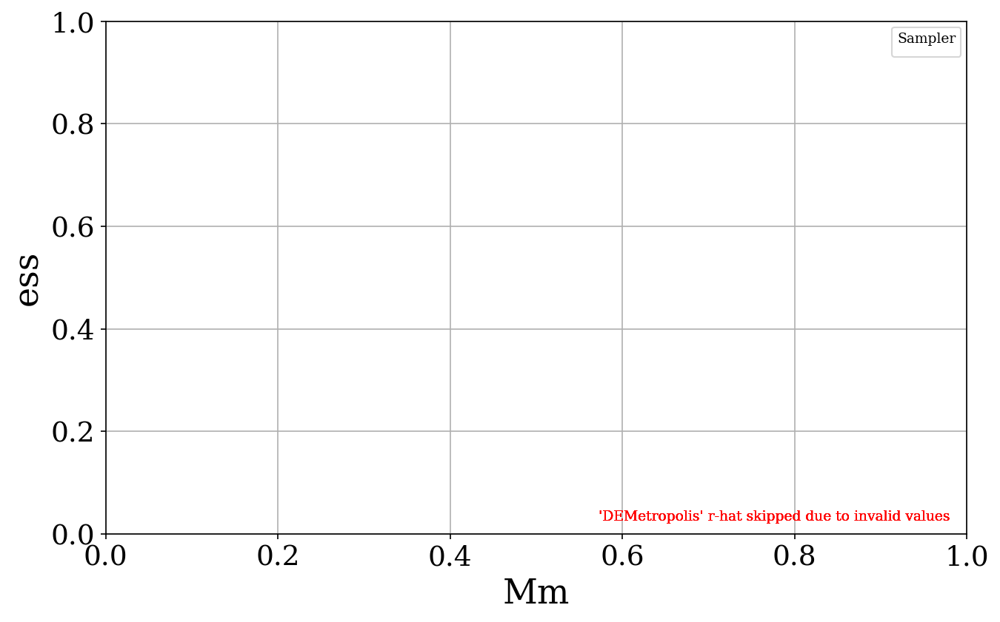
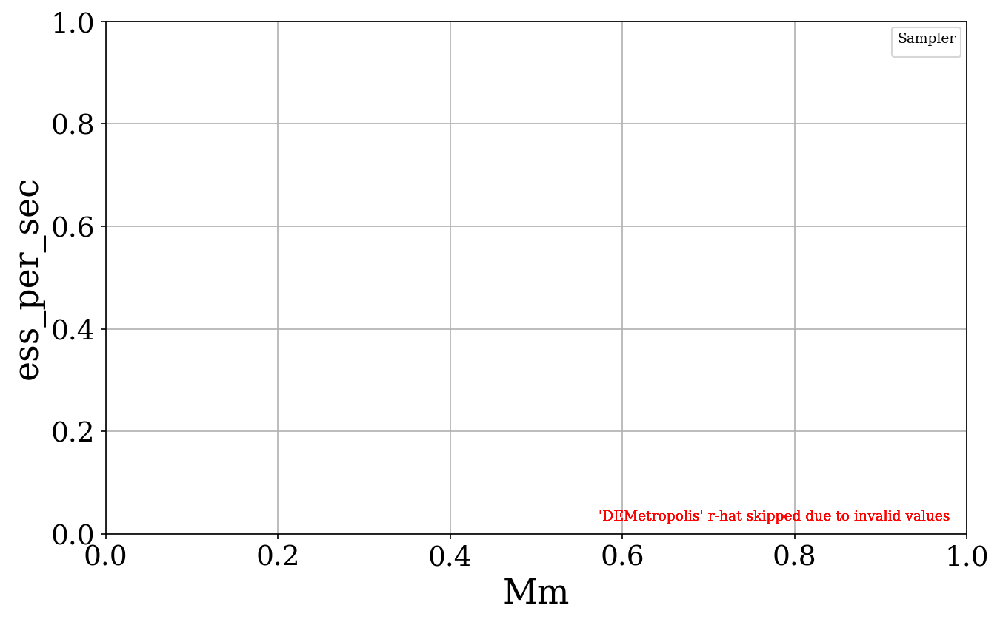
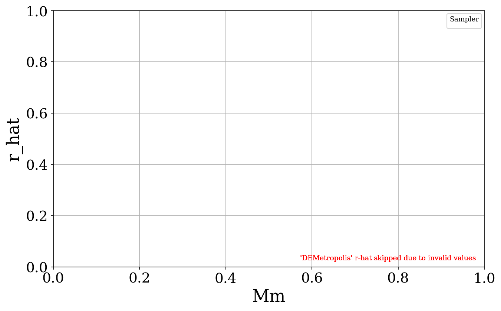

Multimodal_Distance
▼Varying_only_Mode_distance (Mixture, mm, 3 runs)
Pooled Chains results
Mean Rmse

Sampler vs IID stats
| Sampler | Varying | t-stat | p-value | Glass Δ |
|---|---|---|---|---|
| DEMetro_Z | 5 | 1.552 | 0.244 | 3.271 |
| DEMetro_Z | 20 | 0.950 | 0.442 | 15.588 |
| Metro | 5 | -0.305 | 0.779 | -0.355 |
| Metro | 20 | 0.945 | 0.444 | 30.667 |
| HMC | 5 | 0.814 | 0.5 | 5.496 |
| HMC | 20 | 1.911 | 0.196 | 30.502 |
| SMC | 5 | -0.335 | 0.76 | -0.438 |
| SMC | 20 | -2.274 | 0.094 | -1.592 |
Sampler vs Sampler stats
| Sampler Pair | Varying | t-stat | p-value | Cohen’s d |
|---|---|---|---|---|
| HMC_vs_SMC | 0 | 1.015 | 0.417 | 0.586 |
| HMC_vs_SMC | 1 | 2.049 | 0.177 | 1.183 |
| HMC_vs_DEMetro_Z | 0 | 0.472 | 0.684 | 0.272 |
| HMC_vs_DEMetro_Z | 1 | 0.461 | 0.69 | 0.266 |
| DEMetro_Z_vs_SMC | 0 | 2.584 | 0.123 | 1.492 |
| DEMetro_Z_vs_SMC | 1 | 1.029 | 0.411 | 0.594 |
| HMC_vs_Metro | 0 | 0.847 | 0.486 | 0.489 |
| HMC_vs_Metro | 1 | -0.006 | 0.996 | -0.003 |
| Metro_vs_DEMetro_Z | 0 | -1.599 | 0.251 | -0.923 |
| Metro_vs_DEMetro_Z | 1 | 0.353 | 0.758 | 0.204 |
| Metro_vs_SMC | 0 | 0.041 | 0.971 | 0.024 |
| Metro_vs_SMC | 1 | 1.006 | 0.42 | 0.581 |
Mean Rmse (scatter)
Glass’s Δ Mean RMSE

Glass’s Δ table
| Sampler | Varying | MCMC Mean | IID Mean | IID Std | Glass’s Δ |
|---|---|---|---|---|---|
| DEMetro_Z | 5 | 0.087 | 0.048 | 0.012 | 3.271 |
| DEMetro_Z | 20 | 1.297 | 0.193 | 0.071 | 15.588 |
| Metro | 5 | 0.044 | 0.048 | 0.012 | -0.355 |
| Metro | 20 | 2.366 | 0.193 | 0.071 | 30.667 |
| HMC | 5 | 0.114 | 0.048 | 0.012 | 5.496 |
| HMC | 20 | 2.354 | 0.193 | 0.071 | 30.502 |
| SMC | 5 | 0.043 | 0.048 | 0.012 | -0.438 |
| SMC | 20 | 0.080 | 0.193 | 0.071 | -1.592 |
Var Rmse

Sampler vs IID stats
| Sampler | Varying | t-stat | p-value | Glass Δ |
|---|---|---|---|---|
| DEMetro_Z | 5 | 1.550 | 0.255 | 5.454 |
| DEMetro_Z | 20 | 1.148 | 0.37 | 87.162 |
| Metro | 5 | 2.204 | 0.135 | 4.047 |
| Metro | 20 | 1.003 | 0.421 | 318.602 |
| HMC | 5 | 0.266 | 0.811 | 0.459 |
| HMC | 20 | 2.015 | 0.181 | 156.648 |
| SMC | 5 | 1.108 | 0.365 | 2.000 |
| SMC | 20 | 0.128 | 0.908 | 0.249 |
Sampler vs Sampler stats
| Sampler Pair | Varying | t-stat | p-value | Cohen’s d |
|---|---|---|---|---|
| DEMetro_Z_vs_SMC | 0 | 0.843 | 0.488 | 0.487 |
| DEMetro_Z_vs_SMC | 1 | 1.136 | 0.374 | 0.656 |
| Metro_vs_SMC | 0 | 0.821 | 0.498 | 0.474 |
| Metro_vs_SMC | 1 | 0.998 | 0.423 | 0.576 |
| Metro_vs_DEMetro_Z | 0 | -0.271 | 0.812 | -0.156 |
| Metro_vs_DEMetro_Z | 1 | 0.644 | 0.586 | 0.372 |
| HMC_vs_SMC | 0 | -0.467 | 0.686 | -0.270 |
| HMC_vs_SMC | 1 | 2.025 | 0.18 | 1.169 |
| HMC_vs_DEMetro_Z | 0 | -1.605 | 0.25 | -0.926 |
| HMC_vs_DEMetro_Z | 1 | 0.452 | 0.695 | 0.261 |
| HMC_vs_Metro | 0 | -1.341 | 0.312 | -0.774 |
| HMC_vs_Metro | 1 | -0.562 | 0.631 | -0.324 |
Var Rmse (scatter)
Glass’s Δ Variance RMSE

Glass’s Δ table
| Sampler | Varying | MCMC Mean | IID Mean | IID Std | Glass’s Δ |
|---|---|---|---|---|---|
| DEMetro_Z | 5 | 0.115 | 0.032 | 0.015 | 5.454 |
| DEMetro_Z | 20 | 6.488 | 0.197 | 0.072 | 87.162 |
| Metro | 5 | 0.093 | 0.032 | 0.015 | 4.047 |
| Metro | 20 | 23.192 | 0.197 | 0.072 | 318.602 |
| HMC | 5 | 0.039 | 0.032 | 0.015 | 0.459 |
| HMC | 20 | 11.503 | 0.197 | 0.072 | 156.648 |
| SMC | 5 | 0.062 | 0.032 | 0.015 | 2.000 |
| SMC | 20 | 0.215 | 0.197 | 0.072 | 0.249 |
Wasserstein Distance

Sampler vs IID stats
| Sampler | Varying | t-stat | p-value | Glass Δ |
|---|---|---|---|---|
| DEMetro_Z | 5 | 2.406 | 0.114 | 4.271 |
| DEMetro_Z | 20 | 0.970 | 0.434 | 19.556 |
| Metro | 5 | 0.468 | 0.666 | 0.445 |
| Metro | 20 | 0.953 | 0.441 | 39.828 |
| HMC | 5 | 0.988 | 0.426 | 5.836 |
| HMC | 20 | 1.901 | 0.198 | 37.463 |
| SMC | 5 | -0.852 | 0.451 | -0.938 |
| SMC | 20 | -2.786 | 0.0529 | -2.039 |
Sampler vs Sampler stats
| Sampler Pair | Varying | t-stat | p-value | Cohen’s d |
|---|---|---|---|---|
| Metro_vs_SMC | 0 | 1.005 | 0.421 | 0.580 |
| Metro_vs_SMC | 1 | 1.013 | 0.418 | 0.585 |
| DEMetro_Z_vs_SMC | 0 | 6.643 | 0.0219 | 3.835 |
| DEMetro_Z_vs_SMC | 1 | 1.055 | 0.402 | 0.609 |
| HMC_vs_DEMetro_Z | 0 | 0.364 | 0.751 | 0.210 |
| HMC_vs_DEMetro_Z | 1 | 0.449 | 0.697 | 0.259 |
| HMC_vs_SMC | 0 | 1.335 | 0.313 | 0.771 |
| HMC_vs_SMC | 1 | 2.038 | 0.178 | 1.176 |
| HMC_vs_Metro | 0 | 0.930 | 0.45 | 0.537 |
| HMC_vs_Metro | 1 | -0.065 | 0.954 | -0.037 |
| Metro_vs_DEMetro_Z | 0 | -1.995 | 0.184 | -1.152 |
| Metro_vs_DEMetro_Z | 1 | 0.373 | 0.745 | 0.215 |
Wasserstein Distance (scatter)
Glass’s Δ WS

Glass’s Δ table
| Sampler | Varying | MCMC Mean | IID Mean | IID Std | Glass’s Δ |
|---|---|---|---|---|---|
| DEMetro_Z | 5 | 0.101 | 0.057 | 0.010 | 4.271 |
| DEMetro_Z | 20 | 1.190 | 0.189 | 0.051 | 19.556 |
| Metro | 5 | 0.061 | 0.057 | 0.010 | 0.445 |
| Metro | 20 | 2.227 | 0.189 | 0.051 | 39.828 |
| HMC | 5 | 0.117 | 0.057 | 0.010 | 5.836 |
| HMC | 20 | 2.106 | 0.189 | 0.051 | 37.463 |
| SMC | 5 | 0.047 | 0.057 | 0.010 | -0.938 |
| SMC | 20 | 0.085 | 0.189 | 0.051 | -2.039 |
Mmd Rff

Sampler vs IID stats
| Sampler | Varying | t-stat | p-value | Glass Δ |
|---|---|---|---|---|
| DEMetro_Z | 5 | 2.072 | 0.14 | 3.076 |
| DEMetro_Z | 20 | 0.981 | 0.43 | 22.643 |
| Metro | 5 | 0.574 | 0.601 | 0.583 |
| Metro | 20 | 0.943 | 0.445 | 41.091 |
| HMC | 5 | 1.115 | 0.379 | 6.088 |
| HMC | 20 | 1.917 | 0.195 | 42.446 |
| SMC | 5 | -0.718 | 0.518 | -0.748 |
| SMC | 20 | -2.723 | 0.0629 | -1.868 |
Sampler vs Sampler stats
| Sampler Pair | Varying | t-stat | p-value | Cohen’s d |
|---|---|---|---|---|
| Metro_vs_SMC | 0 | 0.947 | 0.443 | 0.547 |
| Metro_vs_SMC | 1 | 0.990 | 0.426 | 0.572 |
| DEMetro_Z_vs_SMC | 0 | 5.646 | 0.03 | 3.260 |
| DEMetro_Z_vs_SMC | 1 | 1.045 | 0.406 | 0.603 |
| HMC_vs_DEMetro_Z | 0 | 0.736 | 0.538 | 0.425 |
| HMC_vs_DEMetro_Z | 1 | 0.438 | 0.704 | 0.253 |
| HMC_vs_Metro | 0 | 1.039 | 0.408 | 0.600 |
| HMC_vs_Metro | 1 | 0.035 | 0.975 | 0.020 |
| Metro_vs_DEMetro_Z | 0 | -1.592 | 0.252 | -0.919 |
| Metro_vs_DEMetro_Z | 1 | 0.315 | 0.783 | 0.182 |
| HMC_vs_SMC | 0 | 1.441 | 0.286 | 0.832 |
| HMC_vs_SMC | 1 | 2.036 | 0.179 | 1.176 |
Mmd Rff (scatter)
Glass’s Δ MMD-RFF

Glass’s Δ table
| Sampler | Varying | MCMC Mean | IID Mean | IID Std | Glass’s Δ |
|---|---|---|---|---|---|
| DEMetro_Z | 5 | 0.028 | 0.015 | 0.004 | 3.076 |
| DEMetro_Z | 20 | 0.120 | 0.016 | 0.005 | 22.643 |
| Metro | 5 | 0.018 | 0.015 | 0.004 | 0.583 |
| Metro | 20 | 0.204 | 0.016 | 0.005 | 41.091 |
| HMC | 5 | 0.041 | 0.015 | 0.004 | 6.088 |
| HMC | 20 | 0.210 | 0.016 | 0.005 | 42.446 |
| SMC | 5 | 0.012 | 0.015 | 0.004 | -0.748 |
| SMC | 20 | 0.008 | 0.016 | 0.005 | -1.868 |
Runtime

Runtime (scatter)
Ess

Ess (scatter)
Ess Per Sec

Ess Per Sec (scatter)
R Hat

R Hat (scatter)
One Chain results
Mean Rmse

Sampler vs IID stats
| Sampler | Varying | t-stat | p-value | Glass Δ |
|---|---|---|---|---|
| DEMetro_Z | 5 | 0.695 | 0.553 | 1.799 |
| DEMetro_Z | 20 | 98.793 | 1.93e-07 | 95.937 |
| Metro | 5 | 5.066 | 0.0173 | 6.989 |
| Metro | 20 | 137.073 | 1.1e-07 | 95.605 |
| HMC | 5 | 3.486 | 0.0548 | 6.372 |
| HMC | 20 | 130.298 | 4.58e-08 | 95.774 |
| SMC | 5 | 0.589 | 0.6 | 0.828 |
| SMC | 20 | -0.745 | 0.509 | -0.901 |
Sampler vs Sampler stats
| Sampler Pair | Varying | t-stat | p-value | Cohen’s d |
|---|---|---|---|---|
| HMC_vs_SMC | 0 | 3.765 | 0.0639 | 2.173 |
| HMC_vs_SMC | 1 | 66.810 | 0.000224 | 38.573 |
| HMC_vs_DEMetro_Z | 0 | 2.737 | 0.112 | 1.580 |
| HMC_vs_DEMetro_Z | 1 | -0.465 | 0.687 | -0.269 |
| DEMetro_Z_vs_SMC | 0 | 0.327 | 0.775 | 0.189 |
| DEMetro_Z_vs_SMC | 1 | 53.892 | 0.000344 | 31.114 |
| HMC_vs_Metro | 0 | -0.297 | 0.795 | -0.171 |
| HMC_vs_Metro | 1 | 1.649 | 0.241 | 0.952 |
| Metro_vs_DEMetro_Z | 0 | 2.772 | 0.109 | 1.601 |
| Metro_vs_DEMetro_Z | 1 | -0.852 | 0.484 | -0.492 |
| Metro_vs_SMC | 0 | 2.563 | 0.124 | 1.480 |
| Metro_vs_SMC | 1 | 67.902 | 0.000217 | 39.203 |
Mean Rmse (scatter)
Glass’s Δ Mean RMSE

Glass’s Δ table
| Sampler | Varying | MCMC Mean | IID Mean | IID Std | Glass’s Δ |
|---|---|---|---|---|---|
| DEMetro_Z | 5 | 0.070 | 0.048 | 0.012 | 1.799 |
| DEMetro_Z | 20 | 6.990 | 0.193 | 0.071 | 95.937 |
| Metro | 5 | 0.133 | 0.048 | 0.012 | 6.989 |
| Metro | 20 | 6.967 | 0.193 | 0.071 | 95.605 |
| HMC | 5 | 0.125 | 0.048 | 0.012 | 6.372 |
| HMC | 20 | 6.979 | 0.193 | 0.071 | 95.774 |
| SMC | 5 | 0.058 | 0.048 | 0.012 | 0.828 |
| SMC | 20 | 0.129 | 0.193 | 0.071 | -0.901 |
Var Rmse

Sampler vs IID stats
| Sampler | Varying | t-stat | p-value | Glass Δ |
|---|---|---|---|---|
| DEMetro_Z | 5 | 2.060 | 0.156 | 4.149 |
| DEMetro_Z | 20 | 346.130 | 3.26e-06 | 956.558 |
| Metro | 5 | 1.195 | 0.346 | 3.385 |
| Metro | 20 | 389.424 | 1.93e-06 | 956.660 |
| HMC | 5 | 0.847 | 0.474 | 1.683 |
| HMC | 20 | 375.732 | 2.28e-06 | 956.664 |
| SMC | 5 | 1.850 | 0.144 | 1.333 |
| SMC | 20 | -0.931 | 0.409 | -0.910 |
Sampler vs Sampler stats
| Sampler Pair | Varying | t-stat | p-value | Cohen’s d |
|---|---|---|---|---|
| DEMetro_Z_vs_SMC | 0 | 1.590 | 0.253 | 0.918 |
| DEMetro_Z_vs_SMC | 1 | 321.602 | 9.67e-06 | 185.677 |
| Metro_vs_SMC | 0 | 0.797 | 0.509 | 0.460 |
| Metro_vs_SMC | 1 | 366.965 | 7.43e-06 | 211.867 |
| Metro_vs_DEMetro_Z | 0 | -0.186 | 0.87 | -0.107 |
| Metro_vs_DEMetro_Z | 1 | 0.260 | 0.819 | 0.150 |
| HMC_vs_SMC | 0 | 0.235 | 0.836 | 0.135 |
| HMC_vs_SMC | 1 | 352.760 | 8.04e-06 | 203.666 |
| HMC_vs_DEMetro_Z | 0 | -1.617 | 0.247 | -0.933 |
| HMC_vs_DEMetro_Z | 1 | 0.373 | 0.745 | 0.215 |
| HMC_vs_Metro | 0 | -0.587 | 0.617 | -0.339 |
| HMC_vs_Metro | 1 | 0.036 | 0.974 | 0.021 |
Var Rmse (scatter)
Glass’s Δ Variance RMSE

Glass’s Δ table
| Sampler | Varying | MCMC Mean | IID Mean | IID Std | Glass’s Δ |
|---|---|---|---|---|---|
| DEMetro_Z | 5 | 0.095 | 0.032 | 0.015 | 4.149 |
| DEMetro_Z | 20 | 69.237 | 0.197 | 0.072 | 956.558 |
| Metro | 5 | 0.083 | 0.032 | 0.015 | 3.385 |
| Metro | 20 | 69.245 | 0.197 | 0.072 | 956.660 |
| HMC | 5 | 0.057 | 0.032 | 0.015 | 1.683 |
| HMC | 20 | 69.245 | 0.197 | 0.072 | 956.664 |
| SMC | 5 | 0.052 | 0.032 | 0.015 | 1.333 |
| SMC | 20 | 0.131 | 0.197 | 0.072 | -0.910 |
Wasserstein Distance

Sampler vs IID stats
| Sampler | Varying | t-stat | p-value | Glass Δ |
|---|---|---|---|---|
| DEMetro_Z | 5 | 1.296 | 0.308 | 2.707 |
| DEMetro_Z | 20 | 24.148 | 0.0015 | 124.098 |
| Metro | 5 | 3.849 | 0.0478 | 8.003 |
| Metro | 20 | 91.290 | 3.82e-06 | 118.890 |
| HMC | 5 | 4.054 | 0.034 | 6.179 |
| HMC | 20 | 41.759 | 0.000308 | 109.339 |
| SMC | 5 | 0.242 | 0.825 | 0.316 |
| SMC | 20 | -0.521 | 0.644 | -0.833 |
Sampler vs Sampler stats
| Sampler Pair | Varying | t-stat | p-value | Cohen’s d |
|---|---|---|---|---|
| Metro_vs_SMC | 0 | 2.477 | 0.132 | 1.430 |
| Metro_vs_SMC | 1 | 46.735 | 0.000458 | 26.982 |
| DEMetro_Z_vs_SMC | 0 | 1.059 | 0.401 | 0.611 |
| DEMetro_Z_vs_SMC | 1 | 19.404 | 0.00265 | 11.203 |
| HMC_vs_DEMetro_Z | 0 | 1.907 | 0.197 | 1.101 |
| HMC_vs_DEMetro_Z | 1 | -2.746 | 0.111 | -1.585 |
| HMC_vs_SMC | 0 | 9.777 | 0.0103 | 5.645 |
| HMC_vs_SMC | 1 | 30.001 | 0.00111 | 17.321 |
| HMC_vs_Metro | 0 | -0.587 | 0.617 | -0.339 |
| HMC_vs_Metro | 1 | -3.574 | 0.0702 | -2.063 |
| Metro_vs_DEMetro_Z | 0 | 2.328 | 0.145 | 1.344 |
| Metro_vs_DEMetro_Z | 1 | -1.322 | 0.317 | -0.763 |
Wasserstein Distance (scatter)
Glass’s Δ WS

Glass’s Δ table
| Sampler | Varying | MCMC Mean | IID Mean | IID Std | Glass’s Δ |
|---|---|---|---|---|---|
| DEMetro_Z | 5 | 0.085 | 0.057 | 0.010 | 2.707 |
| DEMetro_Z | 20 | 6.539 | 0.189 | 0.051 | 124.098 |
| Metro | 5 | 0.140 | 0.057 | 0.010 | 8.003 |
| Metro | 20 | 6.273 | 0.189 | 0.051 | 118.890 |
| HMC | 5 | 0.121 | 0.057 | 0.010 | 6.179 |
| HMC | 20 | 5.784 | 0.189 | 0.051 | 109.339 |
| SMC | 5 | 0.060 | 0.057 | 0.010 | 0.316 |
| SMC | 20 | 0.147 | 0.189 | 0.051 | -0.833 |
Mmd Rff

Sampler vs IID stats
| Sampler | Varying | t-stat | p-value | Glass Δ |
|---|---|---|---|---|
| DEMetro_Z | 5 | 0.684 | 0.554 | 1.337 |
| DEMetro_Z | 20 | 36.854 | 0.000539 | 132.449 |
| Metro | 5 | 5.602 | 0.0116 | 7.158 |
| Metro | 20 | 92.673 | 5.58e-06 | 128.207 |
| HMC | 5 | 2.912 | 0.077 | 4.990 |
| HMC | 20 | 84.483 | 1.31e-05 | 129.698 |
| SMC | 5 | 0.140 | 0.898 | 0.189 |
| SMC | 20 | -1.017 | 0.388 | -1.408 |
Sampler vs Sampler stats
| Sampler Pair | Varying | t-stat | p-value | Cohen’s d |
|---|---|---|---|---|
| Metro_vs_SMC | 0 | 2.952 | 0.0982 | 1.704 |
| Metro_vs_SMC | 1 | 54.480 | 0.000337 | 31.454 |
| DEMetro_Z_vs_SMC | 0 | 0.479 | 0.679 | 0.277 |
| DEMetro_Z_vs_SMC | 1 | 28.575 | 0.00122 | 16.498 |
| HMC_vs_DEMetro_Z | 0 | 2.428 | 0.136 | 1.402 |
| HMC_vs_DEMetro_Z | 1 | -1.207 | 0.351 | -0.697 |
| HMC_vs_Metro | 0 | -0.861 | 0.48 | -0.497 |
| HMC_vs_Metro | 1 | 0.797 | 0.509 | 0.460 |
| Metro_vs_DEMetro_Z | 0 | 2.875 | 0.103 | 1.660 |
| Metro_vs_DEMetro_Z | 1 | -1.297 | 0.324 | -0.749 |
| HMC_vs_SMC | 0 | 3.906 | 0.0597 | 2.255 |
| HMC_vs_SMC | 1 | 54.066 | 0.000342 | 31.215 |
Mmd Rff (scatter)
Glass’s Δ MMD-RFF

Glass’s Δ table
| Sampler | Varying | MCMC Mean | IID Mean | IID Std | Glass’s Δ |
|---|---|---|---|---|---|
| DEMetro_Z | 5 | 0.021 | 0.015 | 0.004 | 1.337 |
| DEMetro_Z | 20 | 0.620 | 0.016 | 0.005 | 132.449 |
| Metro | 5 | 0.045 | 0.015 | 0.004 | 7.158 |
| Metro | 20 | 0.601 | 0.016 | 0.005 | 128.207 |
| HMC | 5 | 0.036 | 0.015 | 0.004 | 4.990 |
| HMC | 20 | 0.608 | 0.016 | 0.005 | 129.698 |
| SMC | 5 | 0.016 | 0.015 | 0.004 | 0.189 |
| SMC | 20 | 0.010 | 0.016 | 0.005 | -1.408 |
Runtime

Runtime (scatter)
Ess

Ess Per Sec

R Hat

KDE + Init Plots


Trace Plots
Pooled
5


20


Chain
5


20


Pairwise Scatter Plots
Pooled
5
20
Chain
5
20